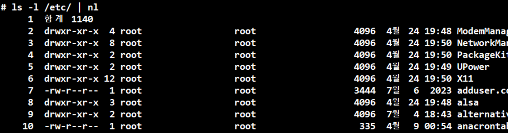
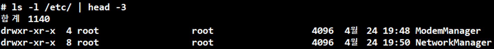
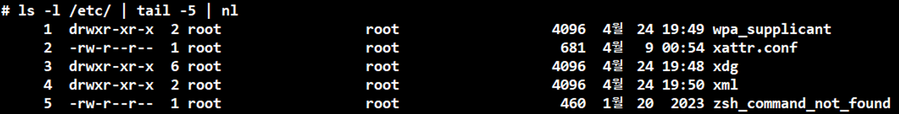
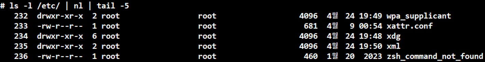

명령어 - |
|
명령어를 동시에 사용(조합)
예시
A | B
B라는 명령어를 보조 기능으로 사용해서 A라는 출력 명령어 합쳐져서 결과 실행
ls -l /etc/ | nl
/etc/라는 디렉터리 내용을 출력하고 줄 번호를 붙여서 출력
ls -l /etc/ | head -3
/etc/라는 디렉터리 내용을 출력하고 위에서부터 세 줄 출력
주의사항
순서를 고려하여 작성해야 한다.
ls -l /etc/ | tail -5 | nl
/etc/라는 디렉터리 내용을 출력 -> 마지막 줄에서 위로 다섯 줄 출력 -> 앞에 번호 매기기
ls -l /etc/ | nl | tail -5
/etc/라는 디렉터리 내용을 출력 -> 앞에 번호 매기기 -> 마지막 줄에서 위로 다섯 줄 출력
